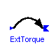
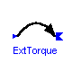
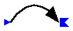
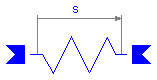

This package contains components to model forces and torques in a 3D system.
Release Notes:
Copyright © 2000-2002, DLR.
The Modelica package is free software; it can be redistributed and/or modified under the terms of the Modelica license, see the license conditions and the accompanying disclaimer in the documentation of package Modelica in file "Modelica/package.mo".
ModelicaAdditions.MultiBody.Forces.ExtForce

An external force element exerts the inport signal as negative force on frame_b.
model ExtForce "External force" extends Interfaces.ExtForceBase; Modelica.Blocks.Interfaces.InPort inPort(final n=3); equation frame_b.f = -inPort.signal; end ExtForce;

An external torque element exerts the inport signals as negative torque on frame_b.
model ExtTorque "External torque" extends Interfaces.ExtTorqueBase; Modelica.Blocks.Interfaces.InPort inPort(final n=3); equation frame_b.t = -inPort.signal; end ExtTorque;
ModelicaAdditions.MultiBody.Forces.ExtLineForce
External force acting at a specified, fixed direction on a body.
The value of the force has to be supplied as input signal to
this component using blocks of the block library.
Parameters:
n(3): Direction of force. Vector is fixed in the body where this
component is attached. The vector has to be given in frame_b.
| Name | Default | Description |
|---|---|---|
| n[3] | {1,0,0} | direction of force (frame_b.f=-n*u) |
model ExtLineForce "External line force"
extends Interfaces.ExtForceBase;
parameter Real n[3]={1,0,0} "direction of force (frame_b.f=-n*u)";
SI.Force u;
Modelica.Blocks.Interfaces.InPort inPort(final n=1);
equation
u = inPort.signal[1];
frame_b.f = -n*u;
end ExtLineForce;
ModelicaAdditions.MultiBody.Forces.ExtLineTorque
External torque acting at a specified, fixed direction on a body.
The value of the torque has to be supplied as input signal to
this component using blocks of the block library.
Parameters:
n(3): Direction of torque. Vector is fixed in the body where this
component is attached. The vector has to be given in frame_b.
| Name | Default | Description |
|---|---|---|
| n[3] | {1,0,0} | direction of torque (frame_b.t=-n*u) |
model ExtLineTorque "External line torque"
extends Interfaces.ExtTorqueBase;
parameter Real n[3]={1,0,0} "direction of torque (frame_b.t=-n*u)";
SI.Torque u;
Modelica.Blocks.Interfaces.InPort inPort(final n=1);
equation
u = inPort.signal[1];
frame_b.t = -n*u;
end ExtLineTorque;
ModelicaAdditions.MultiBody.Forces.Spring
(Translational) linear spring.
Parameters:
c : spring constant in [N/m]
s0: length in [m], at which the spring force is zero
Note: Both cuts of a force element have ALWAYS to be connected at the cut
of a joint, of a body or of the inertial system. It is not possible
to e.g. connect two force elements in series.
| Name | Default | Description |
|---|---|---|
| c | Spring constant [N/m] | |
| s0 | 0 | Unstretched spring length [m] |
| sEps | 1.E-6 | prevent zero-division if rel. distance s=0 [m] |
model Spring "Linear spring" parameter Real c(final unit="N/m", final min=0) "Spring constant"; parameter SI.Length s0=0 "Unstretched spring length"; extends Interfaces.LineForce; equation f = c*(s - s0); end Spring;
ModelicaAdditions.MultiBody.Forces.Damper

Translational, velocity dependent, linear damper.
Parameters:
d: damping constant in [N*s/m]
Note: Both cuts of a force element have ALWAYS to be connected at the cut
of a joint, of a body or of the inertial system. It is not possible
to e.g. connect two force elements in series.
| Name | Default | Description |
|---|---|---|
| d | 0 | Damping constant [N.s/m] |
| sEps | 1.E-6 | prevent zero-division if rel. distance s=0 [m] |
model Damper "Linear (velocity dependent) damper"
parameter Real d(
final unit="N.s/m",
final min=0) = 0 "Damping constant";
extends Interfaces.LineForce;
equation
f = d*sd;
end Damper;
ModelicaAdditions.MultiBody.Forces.SpringDamperPar

(Translational) linear spring and linear damper in parallel.
Parameters:
c : spring constant in [N/m]
s0: length in [m], at which the spring force is zero
d : damping constant in [N*s/m]
Note: Both cuts of a force element have ALWAYS to be connected at the cut
of a joint, of a body or of the inertial system. It is not possible
to e.g. connect two force elements in series.
| Name | Default | Description |
|---|---|---|
| c | Spring constant [N/m] | |
| s0 | 0 | Unstretched spring length [m] |
| d | 0 | Damping constant [N.s/m] |
| sEps | 1.E-6 | prevent zero-division if rel. distance s=0 [m] |
model SpringDamperPar "Linear spring and linear damper in parallel"
parameter Real c(final unit="N/m", final min=0) "Spring constant";
parameter SI.Length s0=0 "Unstretched spring length";
parameter Real d(
final unit="N.s/m",
final min=0) = 0 "Damping constant";
extends Interfaces.LineForce;
equation
f = c*(s - s0) + d*sd;
end SpringDamperPar;
ModelicaAdditions.MultiBody.Forces.SpringDamperSer

(Translational) linear spring and linear damper in
series connection:
cut a --> damper ----> spring --> cut b
| |
|------ x -----| (x is the state variable of this system)
Parameters:
c : spring constant in [N/m]
s0: length in [m], at which the spring force is zero
d : damping constant in [N*s/m]
Terminal variables:
x : length of damper in [m]. The spring length = s - x.
Note: Both cuts of a force element have ALWAYS to be connected at the cut
of a joint, of a body or of the inertial system. It is not possible
to e.g. connect two force elements in series.
| Name | Default | Description |
|---|---|---|
| c | Spring constant [N/m] | |
| s0 | 0 | Unstretched spring length [m] |
| d | 0 | Damping constant [N.s/m] |
| sEps | 1.E-6 | prevent zero-division if rel. distance s=0 [m] |
model SpringDamperSer
"Linear spring and linear damper in series connection"
parameter Real c(final unit="N/m", final min=0) "Spring constant";
parameter SI.Length s0=0 "Unstretched spring length";
parameter Real d(
final unit="N.s/m",
final min=0) = 0 "Damping constant";
extends Interfaces.LineForce;
SI.Position x;
equation
f = c*(s - s0 - x);
d*der(x) = f;
end SpringDamperSer;